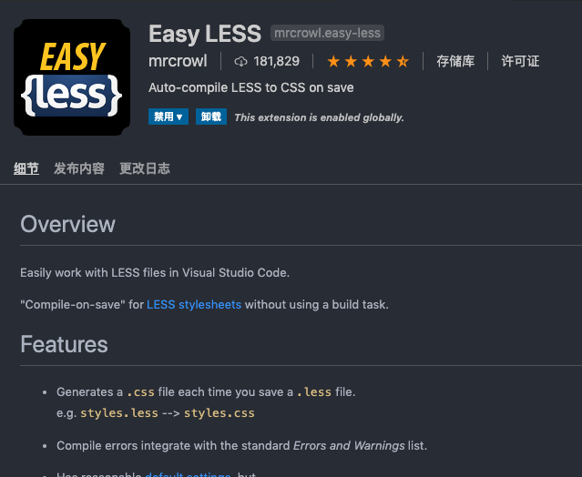

细说修改碎言博客站点的样式
作者:J.sky 发布时间:2019-12-30 20:15:29 Tag:
碎言博客
碎言博客HTML结构
博客HTML只有4个：
- index.html 博客首页
- archives.html 归档
- tags.html 标签页
- p.html 博文详情页
CSS修改
碎言博客CSS前端采用的bootstrap4框架，CSS样式修改采用了less本地修改生成的.css文件。这里推荐一个vscode插件:Easy LESS

这个插件的特点就是在相同目录下可以生成一个同名的.CSS文件，配合less的引用命令@import "theme-dark-1.less";使用起来很方便的。
博客的样式修改
碎言博客的样式主要集中在<link id="blogcss">标签连接的CSS，通过修改对应的LESS文件中对应的颜色变量，可以快速的修改博客的颜色及相关样式，变量我都有注释。
Markdown代码样式
Markdown代码样式通过修改<link id="highlight">标签连接的highlightCSS来修改，在assets/plugins/highlight/styles下可以选择自己喜欢的样式。
进阶修改
觉得手动修改站点样式太麻烦？可以利用jQuery在站点上添加在线改变站点样式的浮动按钮，近期会考录添加的碎言博客的。
关于站长
作者:J.sky 发布时间:2019-12-30 16:25:07 Tag:
未分类
About Me
一个浪迹于互联网的编程爱好者且酷爱画画，希望能成为一名出色的插画师。
关于碎言博客
本来用Python Django开发了一套简易的博客系统，但是由于维护起来倍感吃力，而且云服务器也即将到期费用不菲。
索性改成静态博客得了，试了几个静态博客程序，但是总觉得和别人一样太没意思，正好最近在学习JavaScript jQuery，
索性撸一个静态博客，发现自己就是爱重复造轮子。
2023-03-24
这几天把碎言博客给重构了，换了界面，这次打算坚持写博客了，也不知道能坚持多久。
欢迎进群讨论学习Q群:217840699
碎言博客终端操作详解
作者:J.sky 发布时间:2019-12-30 15:56:49 Tag:
碎言博客
关于z.py
z.py是碎言博客构建索引的关键程序，采用Python3相关技术开发。
终端运行： python3 z.py

即可看到相关的命令帮助。
-i
python3 z.py -i
每次创建完新文章后都会自动创建索引，若是修改了文章的标题，作者，标签，时间等头部信息后，应该运行此命令进行索引更新。
-n
python3 z.py -n 这里写你的新文章的标题名称
-n用来创建新文章，其中还有几个选项可以使用，其中-n后边必须跟随一个新标题。-
-d用来创建一个存放的目录python3 z.py -n blog_title -d blog
会在默认.md存放目录articles下创建一个blog目录，新文章就创建在这里。
-
-t -a -p分别对应标签，作者和文章地址页面名称。作者留空默认填充为博客站长昵称。 -
-v显示当前程序的版本。 -
-tt参数为int，此命令用来生成测试blog,填写需要生成的数目，测试文章放在目录suiyantest下。
碎言静态博客概述及快速开始
作者:J.sky 发布时间:2019-12-29 19:10:30 Tag:
碎言博客
概述
碎言这个名称取自与"碎言片语"，码兄累了吗？累了就休息一下，为未来的自己留下一些碎言片语吧。 演示： 碎言博客

软件架构
前端使用了jQuery，bootstrap4,font-awesome-4.07,marked.js,highlight.js,jqPaginator,less,jQuery.toTop等技术框架。
本地构建博客索引使用了Python的相关技术。
博客文章写作采用Markdown技术支持，让你专注写作更流畅。
快速开始
安装
首先克隆下载碎言静态博客， * Gitee * GitHub
安装完成。
创建文章
python z.py -n 此处写文章标题
这个时候就会在articles目录下创建一篇文章。更多终端操作
创建索引
博客的文章排序及搜索以来此索引blog_data.json，每次创建文章的时候回自动更新索引，但是如果你修改了头部的一些索引信息，则需要运行命令来更新索引。
python z.py -i
修改博客及站长资料
config.json里存放着一些站点的资料，上传前建议先修改成自己的资料。
运行站点
推荐使用Live Server这个vscode得插件，非常方便。
修改站点样式
碎言博客内置了八套网站样式，四套light四套dark，修改四个html页面的外链CSS连接即可。
具体修改方法请点击查看： 细说修改碎言博客站点的样式
部署
git push origin master
提交所有文件到git仓库即可。
欢迎交流
如果有什么问题，欢迎进群讨论学习Q群:217840699